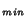
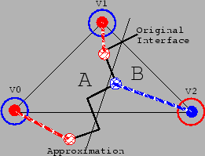

Next: Error Metrics
Up: Discontinuous Field Representations
Previous: Motivation
The ghost values for a vertex V are computed as follows:
- For each material interface present in the cells that share the
vertex, find a vertex V in a triangle mesh representing an
interface with minimal distance to V. In Figure
3, these vertices are indicated by the dashed lines
from V, V
 , and V to the indicated points on the
interface.
, and V to the indicated points on the
interface.
- Evaluate the data set on the far side of the interface at
V and use this as the ghost value at V for the material
on the opposite side of the interface.
Only one ghost value exists per material and vertex. This ensures
that the field representations are C-continuous across cell
boundaries. For example consider vertex V of the triangle in
Figure 1. The vertex V lies in material A,
and therefore we must compute ghost values for materials B and C at
vertex V. The algorithm will examine the three material
boundaries and determine the points from materials B and C that are
closest to V. The fields for materials B and C are evaluated at
these points, and these values are used as the ghost values for
V.
Figure 3:
Triangle containing two materials.
|

|
Next: Error Metrics
Up: Discontinuous Field Representations
Previous: Motivation
Ben Gregorski
2000-05-15